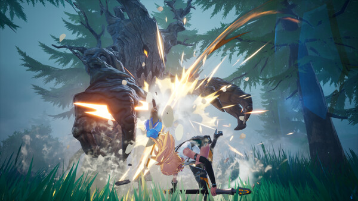

Activity map
Choose content by what you need next
DragonSword combines a main story with open-world discovery, character-driven requests, dungeons and optional multiplayer activities.
| Activity | Primary purpose | Before entering |
|---|---|---|
| Main quests | Story progression, new systems and access to more of Orbis. | Keep one dependable party current. |
| Hero & NPC quests | Character stories, recruitment progress and local rewards. | Read reward previews and nearby objectives. |
| Open-world exploration | Ingredients, Familiars, cellars, caves, deep-sea treasure and discoveries. | Bring mobility and inventory space. |
| Dungeons | Focused combat, themed encounters and progression rewards. | Assign setup, payoff and control roles. |
| Hunts / boss battles | Large-target practice and supported two-player co-op. | Learn one full attack cycle first. |
| Raids | Optional supported three-player co-op content. | Coordinate roles and confirm current availability. |
Main campaign
Chapters 1–8 form the full-release route
Hound13's response to demo feedback confirmed that the full release adds new exploration zones, Chapters 2–8 main quests, and additional hero and NPC quests beyond the Chapter 1 demo material.
Update the active trio
Check levels, equipment and the Status Ailment handoff you expect to use.
Follow systems before side routes
When the story introduces a mechanic or access point, complete its tutorial before expanding your exploration loop.
Clear the nearby backlog
Return to hero quests, resident requests and discoveries that now overlap with your unlocked region.
Why no chapter-by-chapter plot table? Several launch-week sites publish detailed act names and outcomes without a verifiable source. This page will only add named walkthroughs after they can be checked in the release build.
Exploration
The confirmed world layers

Surface
Meadows and settlements
Use story destinations as anchors, then sweep nearby paths for ingredients, residents and familiar encounters.
Below structures
Watchtower cellars
Official material specifically calls out secret cellars. Check buildings vertically rather than assuming every route is outdoors.
Underwater
Deep-sea treasure
Expect a different visual and navigation rhythm. Mark unfinished branches and return once access is clearly established.
Instanced routes
Hidden caves
Approach with a general-purpose party until the enemy set reveals whether you need stronger group control or boss damage.
Dungeons
Prepare for density, not just damage
Dungeons compress enemies, hazards and rewards into a focused route. A team that works in the open world can still struggle if all three heroes need long setup time or only attack one target.
- Bring at least one reliable area option for grouped enemies.
- Save a strong Signal chain for elites instead of spending everything on the first wave.
- Check side rooms and vertical paths before crossing an obvious exit threshold.
- Use the first attempt to identify whether control, survival or damage is the real problem.
- Do not assume every Status Ailment behaves equally against large targets.
Optional multiplayer
Solo first, co-op where supported
The core game is a single-player story and exploration RPG. Official launch information also supports online co-op activities: community documentation based on developer statements identifies two-player boss battles / Subjugation and three-player raids.
Up to 2 players
Boss battles / Hunts
Bring a clear setup and payoff plan. Avoid both players spending every cooldown into the same unsafe animation window.
Up to 3 players
Raids
Coordinate complementary roles and verify that the activity is live in the current build before planning around it.
Availability can change: the Steam listing now includes Online Co-op, but specific modes may roll out or be adjusted. Check official Steam news for the latest activity status.
Boss walls
Diagnose the failure before upgrading

If you die early
Stop attacking sooner, study the full pattern, save one defensive option and check whether your equipment is current.
If time runs out
Improve combo uptime, damage investment and the quality of your Signal handoffs.
If the chain fails
Check the actual in-game ailment and Signal conditions. Large enemies may resist or shorten control states.
If visibility is the issue
Reduce visual clutter where settings allow and watch the boss model rather than only the damage numbers.